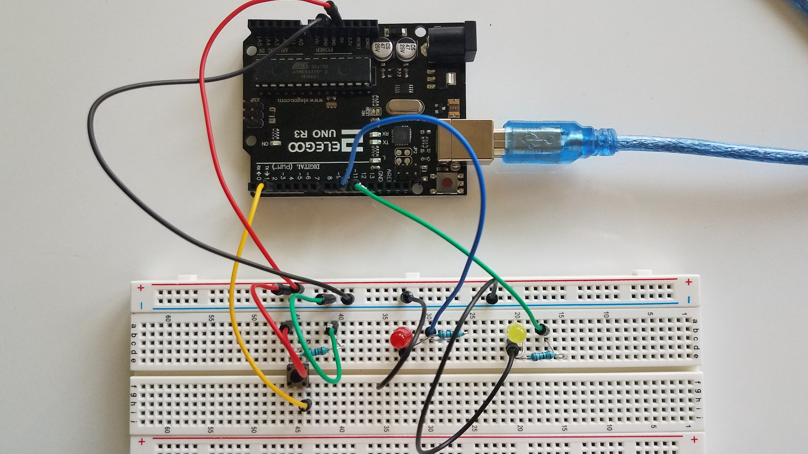

Lily's Assignment 2!
Here is all the documentation for assignment 2!

You can see the use of the for loop in the brightening and then fading of the LEDs after I press the button; look at the light's glow on the breadboard rather than at the LED to notice the variation.
This is my schematic; I used two LEDs and a button, which required three resistors.